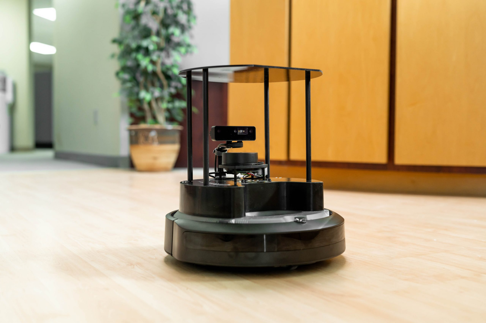
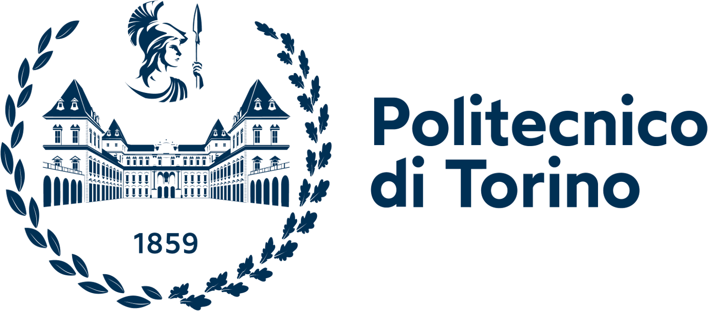

Politecnico di Torino · DIMEAS · Italie
MPPI sémantique & risk-aware - Navigation autonome d'un UGV
Un contrôleur MPPI classique raisonne sur la seule géométrie : il ignore si un obstacle est franchissable (flaque, feuilles mortes, bordure basse), et il ne voit pas les dangers plats que le LiDAR ne détecte pas (boue, sol mouillé ou glissant). J'ajoute une couche de perception sémantique embarquée qui évalue la traversabilité du terrain et alimente une fonction de coût risk-aware - pour une navigation à la fois plus sûre et moins conservatrice.
- Pipeline de segmentation sémantique - benchmark SegFormer / MobileNet / YOLO pour le déploiement temps réel sur Raspberry Pi
- Coût de traversabilité risk-aware injecté dans le MPPI - distingue obstacle infranchissable et terrain franchissable
- Environnements urbains aux configurations complexes simulés sous Gazebo Harmonic + ROS 2 Jazzy (TurtleBot 4, LiDAR + caméra de profondeur OAK-D)
- ROS 2 Jazzy
- Gazebo Harmonic
- C++
- Python
- PyTorch
- Segmentation sémantique
- MPPI
- TurtleBot 4